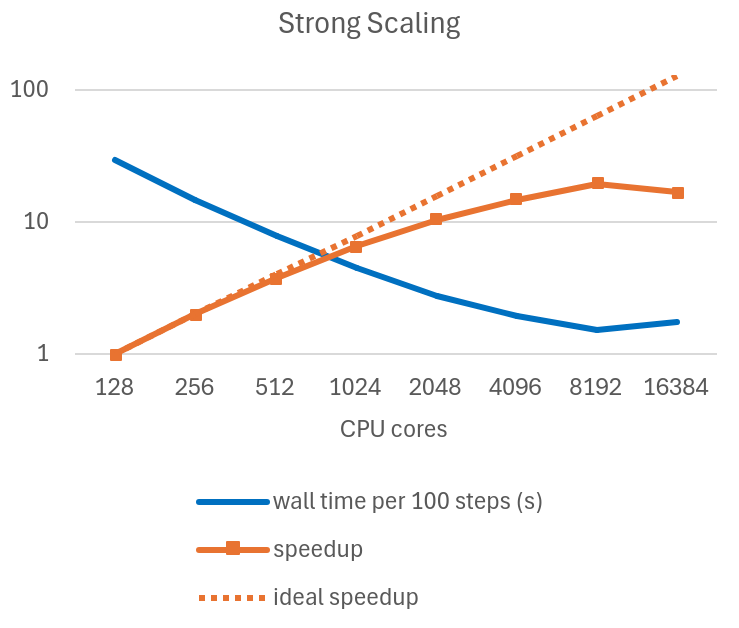

Scaling v0.8.0¶
VEGA HPC¶
128 cores/node.
See the machine website for more specifications: https://doc.vega.izum.si/general-spec/.
- Strong scaling: mesh size 2048x2048, single node RAM usage ~180 GB.
- Weak scaling: mesh size increase 2048*nodes
- 1 node : 2048x2048
- 2 nodes : 2048x4096
- 4 nodes : 4096x4096
- etc...
